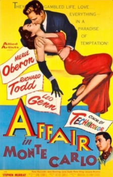
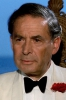
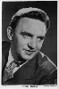

Also known as:24 Hours of a Woman's Life (original title)
Country:United States, 90 minutes
Spoken languages:
Genres:Drama
Director(s):Victor Saville
Writer(s):Stefan Zweig, Warren Chetham-Strode
Video Codec:Unknown
Number: 1440


Certification:
Storyline:
A compulsive gambler stumbles towards losing everything when Merle Oberon decides to save him from himself.
Cast:  
Medium: Original DVD,
Comments: Part of: Leading Ladies - Classic 20 Movie Collection
Loaned: No
Aspect ratio: Unknown